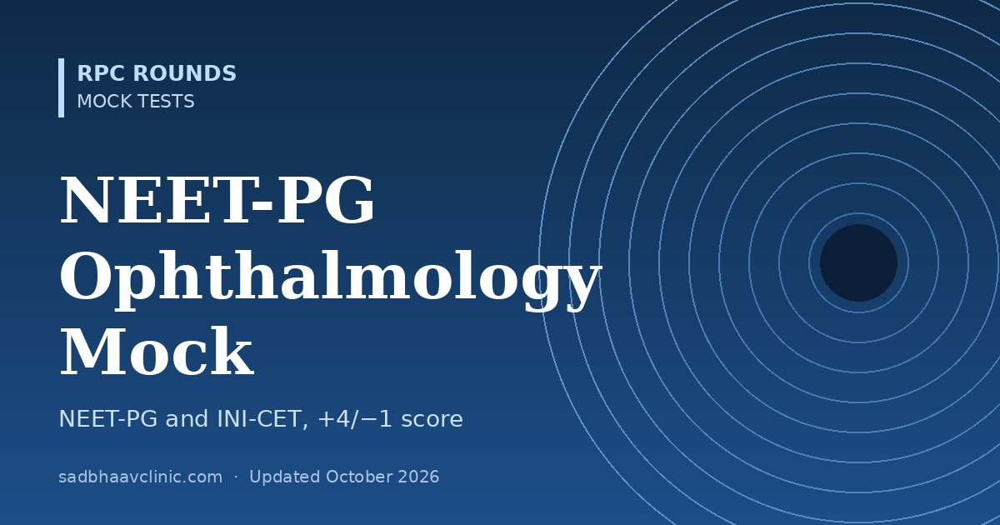

NEET-PG Ophthalmology Mock Test: 50 MCQs with Explanations
Last updated: October 2026
A timed 50-question ophthalmology mock for MBBS students and interns preparing for NEET-PG, INI-CET and FMGE. Questions follow the style of recent papers: short one-liners mixed with clinical vignettes, across every topic examiners like.
- Format: four options, single best answer, 50 minutes. Your result shows both a plain score and a NEET-style score (+4 for correct, −1 for wrong).
- Topics: anatomy and physiology, optics and refraction, lids and lacrimal, conjunctiva and cornea, lens, glaucoma, uvea, retina, neuro-ophthalmology, squint, trauma, pharmacology and community ophthalmology (NPCBVI).
- Every answer explained, with a one-line pearl to remember.
How to use this mock
- Take it once timed. Ophthalmology carries a small share of NEET-PG marks, but questions are predictable and high-yield.
- Review every wrong answer, then read the linked topic pages for the weak areas.
- Retake after a week and aim for 80% or more.
Useful pages: Clinic Desk Reference, Learning Dashboard, exam preparation resources.


Preparing for AIOS-OKAT?
OKAT Decoded is a three-volume question bank by Dr Dhaval Patel: 10,200 original MCQs, each with an explanation, a reason why every other option is wrong, and a pearl, plus 18 full-length mock tests.
More free mocks: all mock tests.
📘 Want more exam-ready material? See Most Commons in Ophthalmology on Kindle, or browse all my books.
Looking for an eye specialist in Ahmedabad? Learn about our Eye Department or book a consultation with Dr. Dhaval Patel.